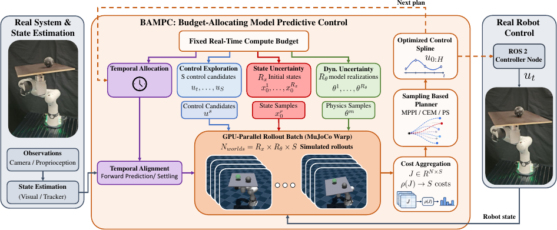
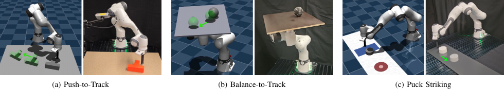
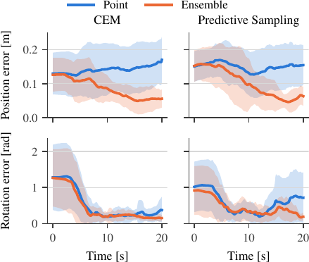
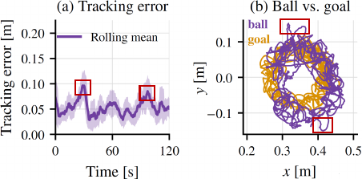
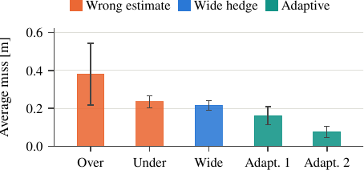

Control exploration
Use the budget for more distinct sampled action sequences.
ICRA 2027 submission No. 5506
Compute Budget Allocation for Real-World Sampling-Based MPC in Contact-Rich Manipulation
In brief
Spend compute on the error source that feedback can't already fix, not on dynamics randomization by default. Fast replanning corrects moderate model mismatch on its own, dynamics uncertainty only pays off when errors accumulate open-loop. Perception drift calls for state uncertainty; misaligned initial contact dynamics call for temporal alignment, not more model hypotheses.
Sampling-based model predictive control (SMPC) is increasingly practical for contact-rich manipulation, as GPU-based physics simulators enable real-time evaluation of large numbers of non-differentiable contact rollouts. However, this computation budget is finite and can be spent in competing ways, including denser control exploration, representing dynamics or state uncertainty, replanning more frequently, or aligning the simulation better with the physical state. Yet, the resulting trade-offs are not well understood in real-world sim-to-real control. In this work, we address this question through a systematic study of how to allocate a fixed computation budget for SMPC in contact-rich manipulation. To enable controlled comparisons, we develop a GPU-based framework named Budget-Allocating Model Predictive Control (BAMPC), which runs on MuJoCo Warp and exposes dynamics uncertainty, state uncertainty, and temporal alignment as independent dimensions of the computation budget while using the same control stack in simulation and on a real robot. Across three contact-rich manipulation tasks, we find that the best budget allocation depends on the dominant sim-to-real error, with dynamics randomization not universally the most effective one.
Method
BAMPC evaluates control candidates and uncertainty realizations in a shared GPU-parallel rollout batch, aggregates each candidate's costs, and sends the result to the sampling-based planner.

Use the budget for more distinct sampled action sequences.
Evaluate each candidate from multiple plausible initial states.
Evaluate controls across alternative physical parameters.
Spend simulation steps on settling, prediction, or faster feedback.
Experiments
We evaluate on three real-robot tasks spanning distinct sim-to-real regimes: quasi-static pushing under visual occlusion, fast rolling dynamics under continuous feedback, and a brief impact followed by open-loop motion.

01 / Push-to-Track
Repeated occlusion makes object pose the dominant source of error, which cannot be resolved through improved tracking alone. A 16-particle state ensemble improves both CEM and Predictive Sampling despite reducing the number of distinct control candidates.

The state ensemble results in the most stable behavior, while the point-state baseline fails when the object is pushed out of reach.
02 / Balance-to-Track
Because the sphere’s rolling state is only partially observable, small errors in its initialization rapidly become large prediction errors. Around 10 to 15 settle steps align the simulated contact state; too few cause delayed reactions, while too many advance the simulated ball too far.

03 / Puck Striking
After impact, the puck evolves open-loop and friction error accumulates. A wide dynamics hedge reduces the miss, and adapting the represented friction range shifts samples back toward control exploration as the estimate improves.

Practical guidance
Start with sufficient control exploration, and before adding uncertainty dimensions, perturb plausible sources of sim-to-real error over realistic ranges to test whether they materially affect predicted performance. If the controller is insensitive to a parameter, a rough estimate is enough: an online ensemble is unlikely to justify the control samples it consumes. Parameters that are both influential and identifiable through a short calibration should be estimated rather than continuously randomized.
State and dynamics uncertainty call for different treatment. State error can reappear at every replanning step and change abruptly under occlusion or contact, so a modest state ensemble is valuable when plausible states lead to different contact outcomes. Dynamics ensembles are more appropriate when parameter values remain hard to distinguish online and errors compound over a long or open-loop horizon where feedback cannot intervene to correct them.
Check temporal consistency before increasing exploration further: faster replanning only helps when the simulated rollout state is already aligned with the physical system: no replanning rate or sample count compensates for a rollout that starts from an inconsistent state.